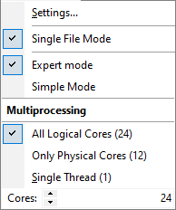

Configuration Menu

Settings… command activates the General Configuration window where you can select units to be used, a user name, a way of data sorting, a page layout for printing, etc.
Export mode and Simple Mode selection allows easy switch between different levels of user interface.
Multiprocessing: this option allows using parallel computations at several processors or several processor cores. It is possible to fine-tune CPU utilization specifying custom number of cores. It might be useful if some other program should run computations together with OptiChar. Leaving some number of cores not occupied by OptiChar will help to avoid the so-called over-subscription problem.